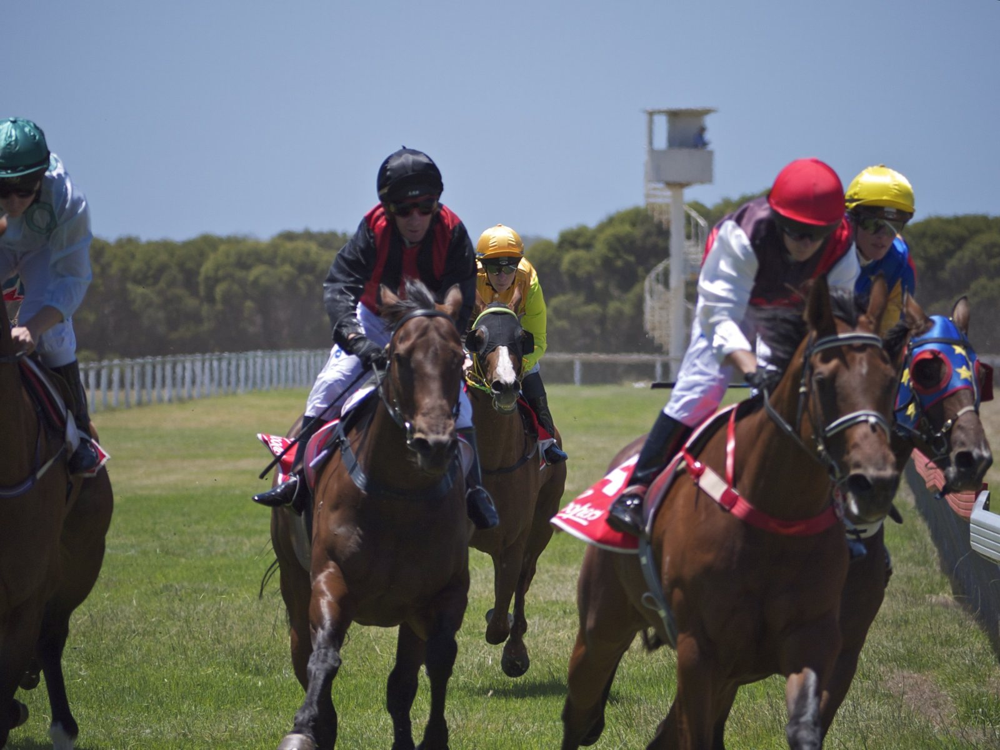

Ocho potrancas declaradas para la Fillies' Mile del Future Champions Friday
Newmarket abre el viernes 9 de octubre su gran fin de semana de otoño con ocho carreras, entre ellas la bet365 Fillies' Mile (G1) y la Challenge Stakes (G2), sobre terreno bueno a firme.

CC BY-SA 2.0
The Jockey Club ha cerrado las declaraciones para el Dubai Future Champions Friday, una jornada de ocho pruebas que arranca a las 13:15 (hora local) y termina a las 17:20. El terreno figura como bueno a firme.
El plato fuerte es la bet365 Fillies' Mile (Grupo 1), sobre la milla, a las 14:57. Corren ocho potrancas de dos años. Aidan O'Brien presenta a Exceptionally (USA) y Haven (IRE), ambas sin jockey asignado en la declaración. Su hijo Joseph Patrick O'Brien envía a Dancing Destiny (IRE), con Declan McDonogh. Andrew Balding también duplica: Forbidden Fire, con Oisin Murphy y el cajón 1, y Scommessa Sicura (IRE), con Saffie Osborne. Completan el lote Lex Victoria (IRE), de Simon y Ed Crisford, con James Doyle; Musical Times (IRE), de Godolphin y Charlie Appleby, con William Buick, y Rogue Passion (IRE), de Edward Bethell, con Rossa Ryan.
La Thoroughbred Industry Employee Awards Challenge Stakes (Grupo 2), sobre 1.400 metros, reúne solo a seis caballos. Wathnan Racing alinea a Holguin, de Hamad Al Jehani con Callum Rodriguez, y a Flora of Bermuda (IRE), de Balding con Doyle. Never So Brave (IRE) sale con Murphy y Witness Stand, de Dr Richard Newland, con Kieran Shoemark. Time To Turn, único tres años del lote, va con Buick para Appleby, y Pina Sonata, de James Fanshawe, con Daniel Muscutt.
La jornada se abre con la Newmarket Academy Godolphin Beacon Project Cornwallis Stakes (Grupo 3), un sprint de 1.000 metros para dosañeros con 13 declarados. O'Brien lleva a Carry The Flag (IRE) y Marco Polo (IRE). Entre los rivales figuran Flann Sunna (IRE), con Buick; Fast Track (IRE), con Murphy, y Rogue Jewel (IRE), con Colin Keane.
Dieciséis potrancas se miden en la Godolphin Lifetime Care Oh So Sharp Stakes (Grupo 3), sobre 1.400 metros. Allí estarán Celestia, de Juddmonte, con Keane; Golden Ring (IRE), de O'Brien; Sweltering, de Cheveley Park Stud, con Murphy, y Sea Venture (IRE), con Buick.
El bet365 Old Rowley Cup Handicap, sobre 2.400 metros, tiene once participantes. Archers Bay (IRE), de Marco Botti, carga el máximo peso (9 st 9 lb) con Ryan Moore. Godolphin presenta a Into The Light, con el aprendiz Toby Moore (descargo de 7 libras), y a Study of Words (IRE), con Buick.
En la Godolphin Under Starters Orders EBF Boadicea Stakes (Listed), sobre 1.200 metros, corren 14 yeguas. Kevin Ryan declara a tres: Magic Basma (IRE), Isle of Fernandez y Lady Youmzain (IRE), esta última con Ryan Moore. Dance In The Storm, de Balding, sale con Murphy.
La Newmarket Pony Academy Pride Stakes (Grupo 3), sobre 2.000 metros, es la carrera más numerosa, con 17 inscritas. Miss K. Rausing tiene a Francophone, de Charlie Johnston con Murphy, y a Miss Wong, de David Simcock con Muscutt. Juddmonte cuenta con Legacy Link, de John y Thady Gosden con Keane, y con Pacific Mission, de Balding con Rodriguez.
Cierra la tarde el HKJC World Pool Handicap, sobre 1.400 metros, con 15 caballos. Back To Me (IRE) y Majestic Dane encabezan los pesos con 9 st 12 lb.
— Redacción de Galope al Día